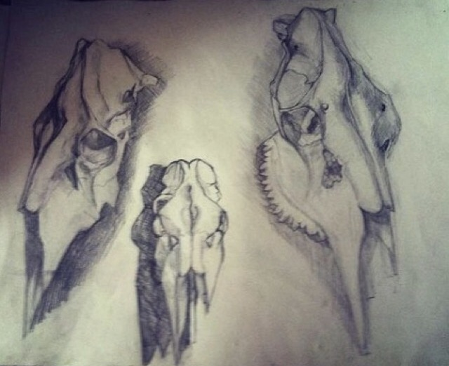

  </section>
 
  <footer>
    <article class="footer_column">
      <p> I believe that academic drawing is very important for painting.  On this page are my drawings.
 Stroke markings are very important, usually I spend about two months of building on the size of A4 painting.
 Looking at the pictures you can see that its not easy. Art reflects cultural values, beliefs and identity and helps to preserve the many different communities </p>
    </article>
    <article class="footer_column">
      <p>The creation of art is a collective activity. Art forms such as dance, theatre and choir all require a group of artists and an audience.</p>
    </article>
  </footer>
 
  <div class="copyright">&copy;2019 Werdi</div>
</div>

</body>
</html>
